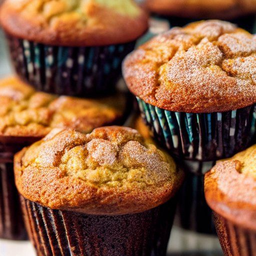

Muffins à la crème sûre et à la cannelle
Préparation: 15 minutes
Cuisson: 18 minutes
Total: 33 minutes
Ingrédients
-
1 1/2 t de farine

-
2 c. à thé de poudre à pâte
-
1/4 c. à thé de soda
-
1/4 c. à thé de sel
-
1/4 t de graisse végétale ou margarine
-
1 t de crème sure ou yogourt nature
-
1/2 t de sucre
-
1/2 t de lait
-
1 oeuf
-
1/4 t de cassonade tassée
-
1/4 t de noix de Grenoble ou de pacanes hachées (facultatif)
-
1 c. à thé de cannelle moulue
-
2 c. à soupe de sucre
Instructions
Mélanger ensemble la farine, la poudre à pâte, le soda et le sel.
- 1 1/2 t de farine
- 2 c. à thé de poudre à pâte
- 1/4 c. à thé de soda
- 1/4 c. à thé de sel
Ajouter 1/4 t de graisse végétale ou margarine à l'aide d'un coupe-pâte ou de deux couteaux, travailler la préparation jusqu'à ce qu'elle ait la texture d'une chapelure grossière.
Dans un autre bol, mélanger la crème sure, une partie du sucre, le lait et l'oeuf.
- 1 t de crème sure ou yogourt nature
- 1/2 t de sucre
- 1/2 t de lait
- 1 oeuf
Verser ce mélange sur les ingrédients secs et, à l'aide d'une cuiller en bois. Mélanger jusqu'à ce que la pâte soit homogène. Ne pas trop mélanger.
Dans un petit bol, mélanger la cassonade, les noix de Grenoble, la cannelle et le reste du sucre.
- 1/4 t de cassonade tassée
- 1/4 t de noix de Grenoble ou de pacanes hachées (facultatif)
- 1 c. à thé de cannelle moulue
- 2 c. à soupe de sucre
Répartir la moitié de la pâte à muffins dans des moules à muffins légèrement graissés ou tapissés de moules de papier. Parsemer de la moitié du mélange aux noix. Couvrir du reste de la pâte à muffins, puis parsemer du reste du mélange aux noix.
Cuire au four à 350 °F de 15 à 18 minutes ou jusqu'à ce qu'un cure-dent inséré au centre en ressorte propre. Servir chauds.